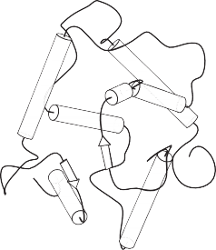

CHAPTER 20
KNOWLEDGE IN LEARNING
In which we examine the problem of learning when you know something already.
In all of the approaches to learning described in the previous chapter, the idea is to construct
a function that has the input–output behavior observed in the data. In each case, the learning
methods can be understood as searching a hypothesis space to find a suitable function, starting
from only a very basic assumption about the form of the function, such as “second-degree
polynomial” or “decision tree” and perhaps a preference for simpler hypotheses. Doing this
amounts to saying that before you can learn something new, you must first forget (almost)
everything you know. In this chapter, we study learning methods that can take advantage
of prior knowledge about the world. In most cases, the prior knowledge is represented Prior knowledge
as general first-order logical theories; thus for the first time we bring together the work on
knowledge representation and learning.
Chapter 19 defined pure inductive learning as a process of finding a hypothesis that agrees
with the observed examples. Here, we specialize this definition to the case where the hypoth-
esis is represented by a set of logical sentences. Example descriptions and classifications will
also be logical sentences, and a new example can be classified by inferring a classification
sentence from the hypothesis and the example description. This approach allows for incre-
mental construction of hypotheses, one sentence at a time. It also allows for prior knowledge,
because sentences that are already known can assist in the classification of new examples.
The logical formulation of learning may seem like a lot of extra work at first, but it turns
out to clarify many of the issues in learning. It enables us to go well beyond the simple
learning methods of Chapter 19 by using the full power of logical inference in the service of
learning.
Recall from Chapter 19 the restaurant learning problem: learning a rule for deciding whether
to wait for a table. Examples were described by attributes such as Alternate, Bar, Fri/Sat,
and so on. In a logical setting, an example is described by a logical sentence; the attributes
become unary predicates. Let us generically call the ith example Xi. For instance, the first
example from Figure 19.3 (page 676) is described by the sentences
Alternate(X1) ∧¬Bar(X1) ∧¬Fri/Sat(X1) ∧Hungry(X1) ∧...
We will use the notation Di(Xi) to refer to the description of Xi, where Di can be any logical
expression taking a single argument. The classification of the example is given by a literal
using the goal predicate, in this case
WillWait(X1) or ¬WillWait(X1) .
The complete training set can thus be expressed as the conjunction of all the example descrip-
tions and goal literals.
The aim of inductive learning in general is to find a hypothesis that classifies the examples
well and generalizes well to new examples. Here we are concerned with hypotheses expressed
in logic; each hypothesis h j will have the form
∀x Goal(x) ⇔ Cj(x) ,
where Cj(x) is a candidate definition—some expression involving the attribute predicates.
For example, a decision tree can be interpreted as a logical expression of this form. Thus, the
tree in Figure 19.6 (page 678) expresses the following logical definition (which we will call
hr for future reference):
∀r WillWait(r) ⇔ Patrons(r, Some)
∨ Patrons(r, Full) ∧Hungry(r) ∧Type(r, French)
∨ Patrons(r, Full) ∧Hungry(r) ∧Type(r, Thai)
∧Fri/Sat(r)
∨ Patrons(r, Full) ∧Hungry(r) ∧Type(r, Burger) .
(20.1)
Extension
False negative
Each hypothesis predicts that a certain set of examples—namely, those that satisfy its candi-
date definition—will be examples of the goal predicate. This set is called the extension of
the predicate. Two hypotheses with different extensions are therefore logically inconsistent
with each other, because they disagree on their predictions for at least one example. If they
have the same extension, they are logically equivalent.
The hypothesis space H is the set of all hypotheses {h1, . . . , hn} that the learning algo-
rithm is designed to entertain. For example, the DECISION-TREE-LEARNING algorithm can
entertain any decision tree hypothesis defined in terms of the attributes provided; its hypoth-
esis space therefore consists of all these decision trees. Presumably, the learning algorithm
believes that one of the hypotheses is correct; that is, it believes the sentence
h1 ∨h2 ∨h3 ∨... ∨hn . (20.2)
As the examples arrive, hypotheses that are not consistent with the examples can be ruled
out. Let us examine this notion of consistency more carefully. Obviously, if hypothesis h j is
consistent with the entire training set, it has to be consistent with each example in the training
set. What would it mean for it to be inconsistent with an example? There are two possible
ways that this can happen:
An example can be a false negative for the hypothesis, if the hypothesis says it should
be negative but in fact it is positive. For instance, the new example X13 described by
Patrons(X13, Full) ∧¬Hungry(X13) ∧... ∧WillWait(X13)
would be a false negative for the hypothesis hr given earlier. From hr and the example
description, we can deduce both WillWait(X13), which is what the example says, and
¬WillWait(X13), which is what the hypothesis predicts. The hypothesis and the example
are therefore logically inconsistent.
An example can be a false positive for the hypothesis, if the hypothesis says it should False positive
be positive but in fact it is negative.1
If an example is a false positive or false negative for a hypothesis, then the example and the
hypothesis are logically inconsistent with each other. Assuming that the example is a correct
observation of fact, then the hypothesis can be ruled out. Logically, this is exactly analogous
to the resolution rule of inference (see Chapter 9), where the disjunction of hypotheses cor-
responds to a clause and the example corresponds to a literal that resolves against one of the
literals in the clause. An ordinary logical inference system therefore could, in principle, learn
from the example by eliminating one or more hypotheses. Suppose, for example, that the
example is denoted by the sentence I1, and the hypothesis space is h1 ∨ h2 ∨ h3 ∨ h4. Then if
I1 is inconsistent with h2 and h3, the logical inference system can deduce the new hypothesis
space h1 ∨h4.
We therefore can characterize inductive learning in a logical setting as a process of grad-
ually eliminating hypotheses that are inconsistent with the examples, narrowing down the
possibilities. Because the hypothesis space is usually vast (or even infinite in the case of
first-order logic), we do not recommend trying to build a learning system using resolution-
based theorem proving and a complete enumeration of the hypothesis space. Instead, we will
describe two approaches that find logically consistent hypotheses with much less effort.
hypothesis
The idea behind current-best-hypothesis search is to maintain a single hypothesis, and to Current-best-
adjust it as new examples arrive in order to maintain consistency. The basic algorithm was
described by John Stuart Mill (1843), and may well have appeared even earlier.
Suppose we have some hypothesis such as hr, of which we have grown quite fond. As
long as each new example is consistent, we need do nothing. Then along comes a false neg-
ative example, X13. What do we do? Figure 20.1(a) shows hr schematically as a region:
everything inside the rectangle is part of the extension of hr. The examples that have actu-
ally been seen so far are shown as “+” or “–”, and we see that hr correctly categorizes all
the examples as positive or negative examples of WillWait. In Figure 20.1(b), a new exam-
ple (circled) is a false negative: the hypothesis says it should be negative but it is actually
positive. The extension of the hypothesis must be increased to include it. This is called gen-
we see a false positive: the hypothesis says the new example (circled) should be positive,
but it actually is negative. The extension of the hypothesis must be decreased to exclude
the example. This is called specialization; in Figure 20.1(e) we see one possible specializa- Specialization
tion of the hypothesis. The “more general than” and “more specific than” relations between
hypotheses provide the logical structure on the hypothesis space that makes efficient search
possible.
We can now specify the CURRENT-BEST-LEARNING algorithm, shown in Figure 20.2.
Notice that each time we consider generalizing or specializing the hypothesis, we must check
for consistency with the other examples, because an arbitrary increase/decrease in the exten-
sion might include/exclude previously seen negative/positive examples.
1 The terms “false positive” and “false negative” are used in medicine to describe erroneous results from lab
tests. A result is a false positive if it indicates that the patient has the disease when in fact no disease is present.
– – – – + – + + – – + + ++ – – – | – – – – + – + + – – + + + ++ – – – | – – – – + – + + – – + + + ++ – – – | – – – | – – + – + + – – | – | – | – | ||||||
– | + + – | + | – | + + – | + | + + | – – + | ||||||
++ | ++ | – | |||||||||||
– | – | – |
(b) (c) (d) (e)
Figure 20.1 (a) A consistent hypothesis. (b) A false negative. (c) The hypothesis is general-
ized. (d) A false positive. (e) The hypothesis is specialized.
function CURRENT-BEST-LEARNING(examples, h) returns a hypothesis or fail
e← First(examples)
if e is consistent with h then
return Current-Best-Learning(Rest(examples), h)
else if e is a false positive for h then
for each h′ in specializations of h consistent with examples seen so far do
h′′ ← Current-Best-Learning(Rest(examples), h′)
if h′′ /= fail then return h′′
else if e is a false negative for h then
for each h′ in generalizations of h consistent with examples seen so far do
h′′ ← Current-Best-Learning(Rest(examples), h′)
if h′′ /= fail then return h′′
Figure 20.2 The current-best-hypothesis learning algorithm. It searches for a consis-
tent hypothesis that fits all the examples and backtracks when no consistent specializa-
tion/generalization can be found. To start the algorithm, any hypothesis can be passed in;
it will be specialized or gneralized as needed.
We have defined generalization and specialization as operations that change the extensionof a hypothesis. Now we need to determine exactly how they can be implemented as syntactic
operations that change the candidate definition associated with the hypothesis, so that a pro-
gram can carry them out. This is done by first noting that generalization and specialization
are also logical relationships between hypotheses. If hypothesis h1, with definition C1, is a
generalization of hypothesis h2 with definition C2, then we must have
∀x C2(x) ⇒ C1(x) .
Therefore in order to construct a generalization of h2, we simply need to find a definition C1
that is logically implied by C2. This is easily done. For example, if C2(x) is Alternate(x) ∧
Patrons(x, Some), then one possible generalization is given by C1(x) ≡ Patrons(x, Some).
This is called dropping conditions. Intuitively, it generates a weaker definition and there- Dropping conditions
fore allows a larger set of positive examples. There are a number of other generalization
operations, depending on the language being operated on. Similarly, we can specialize a hy-
pothesis by adding extra conditions to its candidate definition or by removing disjuncts from
a disjunctive definition. Let us see how this works on the restaurant example, using the data
in Figure 19.3.
The first example, X1, is positive. The attribute Alternate(X1) is true, so let the initial
hypothesis be
h1 : ∀x WillWait(x) ⇔ Alternate(x) .
The second example, X2, is negative. h1 predicts it to be positive, so it is a false positive.
Therefore, we need to specialize h1. This can be done by adding an extra condition that
will rule out X2, while continuing to classify X1 as positive. One possibility is
h2 : ∀x WillWait(x) ⇔ Alternate(x) ∧Patrons(x, Some) .
The third example, X3, is positive. h2 predicts it to be negative, so it is a false negative.
Therefore, we need to generalize h2. We drop the Alternate condition, yielding
h3 : ∀x WillWait(x) ⇔ Patrons(x, Some) .
The fourth example, X4, is positive. h3 predicts it to be negative, so it is a false negative.
We therefore need to generalize h3. We cannot drop the Patrons condition, because
that would yield an all-inclusive hypothesis that would be inconsistent with X2. One
possibility is to add a disjunct:
h4 : ∀x WillWait(x) ⇔ Patrons(x, Some)
∨ (Patrons(x, Full) ∧Fri/Sat(x)) .
Already, the hypothesis is starting to look reasonable. Obviously, there are other possibilities
consistent with the first four examples; here are two of them:
4
h′ : ∀x WillWait(x) ⇔ ¬WaitEstimate(x, 30-60) .
4
h′′ : ∀x WillWait(x) ⇔ Patrons(x, Some)
∨ (Patrons(x, Full) ∧ WaitEstimate(x, 10-30)) .
The CURRENT-BEST-LEARNING algorithm is described nondeterministically, because at any
point, there may be several possible specializations or generalizations that can be applied. The
choices that are made will not necessarily lead to the simplest hypothesis, and may lead to an
unrecoverable situation where no simple modification of the hypothesis is consistent with all
of the data. In such cases, the program must backtrack to a previous choice point.
The CURRENT-BEST-LEARNING algorithm and its variants have been used in many ma-
chine learning systems, starting with Patrick Winston’s (1970) “arch-learning” program. With
a large number of examples and a large space, however, some difficulties arise:
Checking all the previous examples over again for each modification is very expensive.
The search process may involve a great deal of backtracking. As we saw in Chapter 19,
hypothesis space can be a doubly exponentially large place.
Version space
Candidate
elimination
Boundary set
G-set
S-set
Backtracking arises because the current-best-hypothesis approach has to choose a particular
hypothesis as its best guess even though it does not have enough data yet to be sure of the
choice. What we can do instead is to keep around all and only those hypotheses that are
consistent with all the data so far. Each new example will either have no effect or will get
rid of some of the hypotheses. Recall that the original hypothesis space can be viewed as a
disjunctive sentence
h1 ∨h2 ∨h3 . . . ∨hn .
As various hypotheses are found to be inconsistent with the examples, this disjunction shrinks,
retaining only those hypotheses not ruled out. Assuming that the original hypothesis space
does in fact contain the right answer, the reduced disjunction must still contain the right an-
swer because only incorrect hypotheses have been removed. The set of hypotheses remaining
is called the version space, and the learning algorithm (sketched in Figure 20.3) is called the
version space learning algorithm (also the candidate elimination algorithm).
One important property of this approach is that it is incremental: one never has to go back
and reexamine the old examples. All remaining hypotheses are guaranteed to be consistent
with them already. But there is an obvious problem. We already said that the hypothesis
space is enormous, so how can we possibly write down this enormous disjunction?
The following simple analogy is very helpful. How do you represent all the real numbers
between 1 and 2? After all, there are an infinite number of them! The answer is to use an
interval representation that just specifies the boundaries of the set: [1,2]. It works because we
have an ordering on the real numbers.
We also have an ordering on the hypothesis space, namely, generalization/specialization.
This is a partial ordering, which means that each boundary will not be a point but rather a
set of hypotheses called a boundary set. The great thing is that we can represent the entire
version space using just two boundary sets: a most general boundary (the G-set) and a most
specific boundary (the S-set). Everything in between is guaranteed to be consistent with the. Before we prove this, let us recap:
function VERSION-SPACE-LEARNING(examples) returns a version space
local variables: V, the version space: the set of all hypotheses
V ← the set of all hypotheses
for each example e in examples do
if V is not empty then V ← VERSION-SPACE-UPDATE(V, e)
function VERSION-SPACE-UPDATE(V, e) returns an updated version space
V ←{h∈V : h is consistent with e}
Figure 20.3 The version space learning algorithm. It finds a subset of V that is consistent
with all the examples.
This region all inconsistent
m
G
3
G G
1 2
G
. . .
More general
1 2
S S . . . Sn
More specific
This region all inconsistent
Figure 20.4 The version space contains all hypotheses consistent with the examples.
The current version space is the set of hypotheses consistent with all the examples so
far. It is represented by the S-set and G-set, each of which is a set of hypotheses.
Every member of the S-set is consistent with all observations so far, and there are no
consistent hypotheses that are more specific.
Every member of the G-set is consistent with all observations so far, and there are no
consistent hypotheses that are more general.
We want the initial version space (before any examples have been seen) to represent all pos-
sible hypotheses. We do this by setting the G-set to contain True (the hypothesis that contains
everything), and the S-set to contain False (the hypothesis whose extension is empty).
Figure 20.4 shows the general structure of the boundary-set representation of the version
space. To show that the representation is sufficient, we need the following two properties:
Every consistent hypothesis (other than those in the boundary sets) is more specific than
some member of the G-set, and more general than some member of the S-set. (That is,
there are no “stragglers” left outside.) This follows directly from the definitions of Sand G. If there were a straggler h, then it would have to be no more specific than any
member of G, in which case it belongs in G; or no more general than any member of S,
in which case it belongs in S.
Every hypothesis more specific than some member of the G-set and more general than
some member of the S-set is a consistent hypothesis. (That is, there are no “holes”
between the boundaries.) Any h between S and G must reject all the negative examples
rejected by each member of G (because it is more specific), and must accept all the pos-
itive examples accepted by any member of S (because it is more general). Thus, h must
agree with all the examples, and therefore cannot be inconsistent. Figure 20.5 shows
–
–
–
–
– G1
–
–
–
+
+ +
+
G2
–
+
+
+
+
+ S1
+
–
–
–
–
–
Figure 20.5 The extensions of the members of G and S. No known examples lie in between
the two sets of boundaries.
the situation: there are no known examples outside S but inside G, so any hypothesis in
the gap must be consistent.
We have therefore shown that if S and G are maintained according to their definitions, then
they provide a satisfactory representation of the version space. The only remaining problem
is how to update S and G for a new example (the job of the VERSION-SPACE-UPDATE func-
tion). This may appear rather complicated at first, but from the definitions and with the help
of Figure 20.4, it is not too hard to reconstruct the algorithm.
We need to worry about the members Si and Gi of the S- and G-sets. For each one, the
new example may be a false positive or a false negative.
False positive for Si: This means Si is too general, but there are no consistent special-
izations of Si (by definition), so we throw it out of the S-set.
False negative for Si: This means Si is too specific, so we replace it by all its immediate
generalizations, provided they are more specific than some member of G.
False positive for Gi: This means Gi is too general, so we replace it by all its immediate
specializations, provided they are more general than some member of S.
False negative for Gi: This means Gi is too specific, but there are no consistent gener-
alizations of Gi (by definition) so we throw it out of the G-set.
We continue these operations for each new example until one of three things happens:
We have exactly one hypothesis left in the version space, in which case we return it as
the unique hypothesis.
The version space collapses—either S or G becomes empty, indicating that there are
no consistent hypotheses for the training set. This is the same case as the failure of the
simple version of the decision tree algorithm.
We run out of examples and have several hypotheses remaining in the version space.
This means the version space represents a disjunction of hypotheses. For any new
example, if all the disjuncts agree, then we can return their classification of the example.
If they disagree, one possibility is to take the majority vote.
We leave as an exercise the application of the VERSION-SPACE-LEARNING algorithm to the
restaurant data.
There are two principal drawbacks to the version-space approach:
If the domain contains noise or insufficient attributes for exact classification, the version
space will always collapse.
If we allow unlimited disjunction in the hypothesis space, the S-set will always contain
a single most-specific hypothesis, namely, the disjunction of the descriptions of the
positive examples seen to date. Similarly, the G-set will contain just the negation of the
disjunction of the descriptions of the negative examples.
For some hypothesis spaces, the number of elements in the S-set or G-set may grow
exponentially in the number of attributes, even though efficient learning algorithms exist
for those hypothesis spaces.
To date, no completely successful solution has been found for the problem of noise. The
problem of disjunction can be addressed by allowing only limited forms of disjunction or
hierarchy
by including a generalization hierarchy of more general predicates. For example, instead Generalization
of using the disjunction WaitEstimate(x, 30-60) ∨ WaitEstimate(x, >60), we might use the
single literal LongWait(x). The set of generalization and specialization operations can be
easily extended to handle this.
The pure version space algorithm was first applied in the Meta-DENDRAL system, which
was designed to learn rules for predicting how molecules would break into pieces in a mass
spectrometer (Buchanan and Mitchell, 1978). Meta-DENDRAL was able to generate rules that
were sufficiently novel to warrant publication in a journal of analytical chemistry—the first
real scientific knowledge generated by a computer program. It was also used in the elegant
LEX system (Mitchell et al., 1983), which was able to learn to solve symbolic integration
problems by studying its own successes and failures. Although version space methods are
probably not practical in most real-world learning problems, mainly because of noise, they
provide a good deal of insight into the logical structure of hypothesis space.
The preceding section described the simplest setting for inductive learning. To understand the
role of prior knowledge, we need to talk about the logical relationships among hypotheses,
example descriptions, and classifications. Let Descriptions denote the conjunction of all the
example descriptions in the training set, and let Classifications denote the conjunction of all
the example classifications. Then a Hypothesis that “explains the observations” must satisfy
the following property (recall that |= means “logically entails”):
Hypothesis∧Descriptions |= Classifications . (20.3)
constraint
We call this kind of relationship an entailment constraint, in which Hypothesis is the “un- Entailment
known.” Pure inductive learning means solving this constraint, where Hypothesis is drawn
from some predefined hypothesis space. For example, if we consider a decision tree as a
logical formula (see Equation (20.1) on page 740), then a decision tree that is consistent with
all the examples will satisfy Equation (20.3). If we place no restrictions on the logical form
of the hypothesis, of course, then Hypothesis = Classifications also satisfies the constraint.
Ockham’s razor tells us to prefer small, consistent hypotheses, so we try to do better than
simply memorizing the examples.
Knowledge-based
inductive learning
Hypotheses
Prior
knowledge
Observations Predictions
Figure 20.6 A cumulative learning process uses, and adds to, its stock of background
knowledge over time.
This simple knowledge-free picture of inductive learning persisted until the early 1980s.
The modern approach is to design agents that already know something and are trying to learn
some more. This may not sound like a terrifically deep insight, but it makes quite a difference
to the way we design agents. It might also have some relevance to our theories about how
science itself works. The general idea is shown schematically in Figure 20.6.
An autonomous learning agent that uses background knowledge must somehow obtain
the background knowledge in the first place, in order for it to be used in the new learning
episodes. This method must itself be a learning process. The agent’s life history will there-
fore be characterized by cumulative, or incremental, development. Presumably, the agent
could start out with nothing, performing inductions in vacuo like a good little pure induc-
tion program. But once it has eaten from the Tree of Knowledge, it can no longer pursue
such naive speculations and should use its background knowledge to learn more and more
effectively. The question is then how to actually do this.
Let us consider some commonsense examples of learning with background knowledge. Many
apparently rational cases of inferential behavior in the face of observations clearly do not
follow the simple principles of pure induction.
Sometimes one leaps to general conclusions after only one observation. Gary Larson
once drew a cartoon in which a bespectacled caveman, Zog, is roasting his lizard on
the end of a pointed stick. He is watched by an amazed crowd of his less intellectual
contemporaries, who have been using their bare hands to hold their victuals over the fire.
This enlightening experience is enough to convince the watchers of a general principle
of painless cooking.
Or consider the case of the traveler to Brazil meeting her first Brazilian. On hearing him
speak Portuguese, she immediately concludes that Brazilians speak Portuguese, yet on
discovering that his name is Fernando, she does not conclude that all Brazilians are
called Fernando. Similar examples appear in science. For example, when a freshman
physics student measures the density and conductance of a sample of copper at a par-
ticular temperature, she is quite confident in generalizing those values to all pieces of
copper. Yet when she measures its mass, she does not even consider the hypothesis that
all pieces of copper have that mass. On the other hand, it would be quite reasonable to
make such a generalization over all pennies.
Finally, consider the case of a pharmacologically ignorant but diagnostically sophisti-
cated medical student observing a consulting session between a patient and an expert
internist. After a series of questions and answers, the expert tells the patient to take a
course of a particular antibiotic. The medical student infers the general rule that that
particular antibiotic is effective for a particular type of infection.
These are all cases in which the use of background knowledge allows much faster learning K
than one might expect from a pure induction program.
In each of the preceding examples, one can appeal to prior knowledge to try to justify the
generalizations chosen. We will now look at what kinds of entailment constraints are operat-
ing in each case. The constraints will involve the Background knowledge, in addition to the
Hypothesis and the observed Descriptions and Classifications.
In the case of lizard toasting, the cavemen generalize by explaining the success of the
pointed stick: it supports the lizard while keeping the hand away from the fire. From this
explanation, they can infer a general rule: that any long, rigid, sharp object can be used to toast
small, soft-bodied edibles. This kind of generalization process has been called explanation-
learning
based learning, or EBL. Notice that the general rule follows logically from the background Explanation-based
knowledge possessed by the cavemen. Hence, the entailment constraints satisfied by EBL are
the following:
Hypothesis∧Descriptions |= Classifications
Background |= Hypothesis .
Because EBL uses Equation (20.3), it was initially thought to be a way to learn from ex-
amples. But because it requires that the background knowledge be sufficient to explain the
Hypothesis, which in turn explains the observations, the agent does not actually learn any- K
thing factually new from the example. The agent could have derived the example from what
it already knew, although that might have required an unreasonable amount of computation.
EBL is now viewed as a method for converting first-principles theories into useful, special-
purpose knowledge. We describe algorithms for EBL in Section 20.3.
The situation of our traveler in Brazil is quite different, for she cannot necessarily explain
why Fernando speaks the way he does, unless she knows her papal bulls. Moreover, the same
generalization would be forthcoming from a traveler entirely ignorant of colonial history. The
relevant prior knowledge in this case is that, within any given country, most people tend to
speak the same language; on the other hand, Fernando is not assumed to be the name of all
Brazilians because this kind of regularity does not hold for names. Similarly, the freshman
physics student also would be hard put to explain the particular values that she discovers for
the conductance and density of copper. She does know, however, that the material of which an
object is composed and its temperature together determine its conductance. In each case, the
prior knowledge Background concerns the relevance of a set of features to the goal predicate. Relevance
This knowledge, together with the observations, allows the agent to infer a new, general rule
that explains the observations:
Hypothesis∧Descriptions |= Classifications ,
Background ∧Descriptions∧Classifications |= Hypothesis . (20.4)
Relevance-based
learning
Knowledge-based
inductive learning
Inductive logic
programming
We call this kind of generalization relevance-based learning, or RBL (although the name is
not standard). Notice that whereas RBL does make use of the content of the observations, it
does not produce hypotheses that go beyond the logical content of the background knowledge
and the observations. It is a deductive form of learning and cannot by itself account for the
creation of new knowledge starting from scratch.
In the case of the medical student watching the expert, we assume that the student’s
prior knowledge is sufficient to infer the patient’s disease D from the symptoms. This is
not, however, enough to explain the fact that the doctor prescribes a particular medicine M.
The student needs to propose another rule, namely, that M generally is effective against D.
Given this rule and the student’s prior knowledge, the student can now explain why the expert
prescribes M in this particular case. We can generalize this example to come up with the
entailment constraint
Background ∧Hypothesis∧Descriptions |= Classifications . (20.5)
That is, the background knowledge and the new hypothesis combine to explain the examples.
As with pure inductive learning, the learning algorithm should propose hypotheses that are as
simple as possible, consistent with this constraint. Algorithms that satisfy constraint (20.5)
are called knowledge-based inductive learning, or KBIL, algorithms.
KBIL algorithms, which are described in detail in Section 20.5, have been studied mainly
in the field of inductive logic programming, or ILP. In ILP systems, prior knowledge plays
two key roles in reducing the complexity of learning:
Because any hypothesis generated must be consistent with the prior knowledge as well
as with the new observations, the effective hypothesis space size is reduced to include
only those theories that are consistent with what is already known.
For any given set of observations, the size of the hypothesis required to construct an
explanation for the observations can be much reduced, because the prior knowledge
will be available to help out the new rules in explaining the observations. The smaller
the hypothesis, the easier it is to find.
In addition to allowing the use of prior knowledge in induction, ILP systems can formulate
hypotheses in general first-order logic, rather than in the restricted attribute-based language
of Chapter 19. This means that they can learn in environments that cannot be understood by
simpler systems.
Explanation-based learning is a method for extracting general rules from individual obser-
vations. As an example, consider the problem of differentiating and simplifying algebraic
expressions (Exercise 9.17). If we differentiate an expression such as X 2 with respect to
X , we obtain 2X . (We use a capital letter for the arithmetic unknown X , to distinguish it
from the logical variable x.) In a logical reasoning system, the goal might be expressed as
ASK(Derivative(X 2, X ) = d, KB), with solution d = 2X .
Anyone who knows differential calculus can see this solution “by inspection” as a result
of practice in solving such problems. A student encountering such problems for the first
time, or a program with no experience, will have a much more difficult job. Application
of the standard rules of differentiation eventually yields the expression 1 × (2 × (X (2−1))),
and eventually this simplifies to 2X . In the authors’ logic programming implementation, this
takes 136 proof steps, of which 99 are on dead-end branches in the proof. After such an
experience, we would like the program to solve the same problem much more quickly the
next time it arises.
The technique of memoization has long been used in computer science to speed up pro- Memoization
grams by saving the results of computation. The basic idea of memo functions is to accumu-
late a database of input–output pairs; when the function is called, it first checks the database
to see whether it can avoid solving the problem from scratch. Explanation-based learning
takes this a good deal further, by creating general rules that cover an entire class of cases.
In the case of differentiation, memoization would remember that the derivative of X 2 with
respect to X is 2X , but would leave the agent to calculate the derivative of Z2 with respect to
Z from scratch. We would like to be able to extract the general rule that for any arithmetic
unknown u, the derivative of u2 with respect to u is 2u. (An even more general rule for un can
also be produced, but the current example suffices to make the point.) In logical terms, this is
expressed by the rule
ArithmeticUnknown(u) ⇒ Derivative(u2, u) = 2u .
If the knowledge base contains such a rule, then any new case that is an instance of this rule
can be solved immediately.
This is, of course, merely a trivial example of a very general phenomenon. Once some-
thing is understood, it can be generalized and reused in other circumstances. It becomes an
“obvious” step and can then be used as a building block in solving problems still more com-
plex. Alfred North Whitehead (1911), co-author with Bertrand Russell of Principia Mathe-
matica, wrote “Civilization advances by extending the number of important operations that K
we can do without thinking about them,” perhaps himself applying EBL to his understanding
of events such as Zog’s discovery. If you have understood the basic idea of the differenti-
ation example, then your brain is already busily trying to extract the general principles of
explanation-based learning from it. Notice that you hadn’t already invented EBL before you
saw the example. Like the cavemen watching Zog, you (and we) needed an example before
we could generate the basic principles. This is because explaining why something is a good
idea is much easier than coming up with the idea in the first place.
The basic idea behind EBL is first to construct an explanation of the observation using prior
knowledge, and then to establish a definition of the class of cases for which the same expla-
nation structure can be used. This definition provides the basis for a rule covering all of the
cases in the class. The “explanation” can be a logical proof, but more generally it can be any
reasoning or problem-solving process whose steps are well defined. The key is to be able to
identify the necessary conditions for those same steps to apply to another case.
We will use for our reasoning system the simple backward-chaining theorem prover de-
scribed in Chapter 9. The proof tree for Derivative(X 2, X ) = 2X is too large to use as an
example, so we will use a simpler problem to illustrate the generalization method. Suppose
our problem is to simplify 1 × (0 + X ). The knowledge base includes the following rules:
Rewrite(u, v) ∧Simplify(v, w) ⇒ Simplify(u, w) .
Primitive(u) ⇒ Simplify(u, u) .
ArithmeticUnknown(u) ⇒ Primitive(u) .
Number(u) ⇒ Primitive(u) .
Rewrite(1 ×u, u) .
.
Rewrite(0 + u, u) .
.
The proof that the answer is X is shown in the top half of Figure 20.7. The EBL method
actually constructs two proof trees simultaneously. The second proof tree uses a variabilized
goal in which the constants from the original goal are replaced by variables. As the original
proof proceeds, the variabilized proof proceeds in step, using exactly the same rule applica-
tions. This could cause some of the variables to become instantiated. For example, in order
to use the rule Rewrite(1 ×u, u), the variable x in the subgoal Rewrite(x× (y + z), v) must be
bound to 1. Similarly, y must be bound to 0 in the subgoal Rewrite(y + z, v′) in order to use
the rule Rewrite(0 + u, u). Once we have the generalized proof tree, we take the leaves (with
the necessary bindings) and form a general rule for the goal predicate:
Rewrite(1 × (0 + z), 0 + z) ∧Rewrite(0 + z, z) ∧ArithmeticUnknown(z)
⇒ Simplify(1 × (0 + z), z) .
Notice that the first two conditions on the left-hand side are true regardless of the value of z.
We can therefore drop them from the rule, yielding
ArithmeticUnknown(z) ⇒ Simplify(1 × (0 + z), z) .
In general, conditions can be dropped from the final rule if they impose no constraints on the
variables on the right-hand side of the rule, because the resulting rule will still be true and will
be more efficient. Notice that we cannot drop the condition ArithmeticUnknown(z), because
not all possible values of z are arithmetic unknowns. Values other than arithmetic unknowns
might require different forms of simplification: for example, if z were 2 × 3, then the correct
simplification of 1 × (0 + (2 × 3)) would be 6 and not 2 × 3.
To recap, the basic EBL process works as follows:
Given an example, construct a proof that the goal predicate applies to the example using
the available background knowledge.
In parallel, construct a generalized proof tree for the variabilized goal using the same
inference steps as in the original proof.
Construct a new rule whose left-hand side consists of the leaves of the proof tree and
whose right-hand side is the variabilized goal (after applying the necessary bindings
from the generalized proof).
Drop any conditions from the left-hand side that are true regardless of the values of the
variables in the goal.
The generalized proof tree in Figure 20.7 actually yields more than one generalized rule. For
example, if we terminate, or prune, the growth of the right-hand branch in the proof tree
when it reaches the Primitive step, we get the rule
Primitive(z) ⇒ Simplify(1 × (0 + z), z) .
Yes, {v / 0+X}
Yes, {v' / X}
Yes,
Yes, {x / 1, v / y+z}
Yes, {y / 0, v'/ z}
ArithmeticUnknown(z)
Primitive(z)
Simplify(z,w)
ArithmeticUnknown(X)
Primitive(X)
Simplify(X,w)
Rewrite(y+z,v')
Simplify(y+z,w)
Rewrite(x × (y+z),v)
Simplify(x × (y+z),w)
Rewrite(0+X,v')
Simplify(0+X,w)
Rewrite(1 × (0+X),v)
Simplify(1 × (0+X),w)
{w / X}
{ }
{w / z}
Yes, { }
Figure 20.7 Proof trees for the simplification problem. The first tree shows the proof for the
original problem instance, from which we can derive
ArithmeticUnknown(z) ⇒ Simplify(1 × (0 + z), z) .
The second tree shows the proof for a problem instance with all constants replaced by vari-
ables, from which we can derive a variety of other rules.
This rule is as valid as, but more general than, the rule using ArithmeticUnknown, because it
covers cases where z is a number. We can extract a still more general rule by pruning after
the step Simplify(y + z, w), yielding the rule
Simplify(y + z, w) ⇒ Simplify(1 × (y + z), w) .
In general, a rule can be extracted from any partial subtree of the generalized proof tree. Now
we have a problem: which of these rules do we choose?
The choice of which rule to generate comes down to the question of efficiency. There are
three factors involved in the analysis of efficiency gains from EBL:
Adding large numbers of rules can slow down the reasoning process, because the in-
ference mechanism must still check those rules even in cases where they do not yield a
solution. In other words, it increases the branching factor in the search space.
To compensate for the slowdown in reasoning, the derived rules must offer significant
increases in speed for the cases that they do cover. These increases come about mainly
because the derived rules avoid dead ends that would otherwise be taken, but also be-
cause they shorten the proof itself.
Derived rules should be as general as possible, so that they apply to the largest possible
set of cases.
Operationality
►
A common approach to ensuring that derived rules are efficient is to insist on the opera-of each subgoal in the rule. A subgoal is operational if it is “easy” to solve. For
example, the subgoal Primitive(z) is easy to solve, requiring at most two steps, whereas the
subgoal Simplify(y + z, w) could lead to an arbitrary amount of inference, depending on the
values of y and z. If a test for operationality is carried out at each step in the construction
of the generalized proof, then we can prune the rest of a branch as soon as an operational
subgoal is found, keeping just the operational subgoal as a conjunct of the new rule.
Unfortunately, there is usually a tradeoff between operationality and generality. More
specific subgoals are generally easier to solve but cover fewer cases. Also, operationality
is a matter of degree: one or two steps is definitely operational, but what about 10 or 100?
Finally, the cost of solving a given subgoal depends on what other rules are available in the
knowledge base. It can go up or down as more rules are added. Thus, EBL systems really
face a very complex optimization problem in trying to maximize the efficiency of a given
initial knowledge base. It is sometimes possible to derive a mathematical model of the effect
on overall efficiency of adding a given rule and to use this model to select the best rule to
add. The analysis can become very complicated, however, especially when recursive rules
are involved. One promising approach is to address the problem of efficiency empirically,
simply by adding several rules and seeing which ones are useful and actually speed things up.
Empirical analysis of efficiency is actually at the heart of EBL. What we have been call-
ing loosely the “efficiency of a given knowledge base” is actually the average-case com-
plexity on a distribution of problems. By generalizing from past example problems, EBLThis works as long as the distribution of past examples is roughly the same as for
future examples—the same assumption used for PAC-learning in Section 19.5. If the EBL
system is carefully engineered, it is possible to obtain significant speedups. For example, a
very large Prolog-based natural language system designed for speech-to-speech translation
between Swedish and English was able to achieve real-time performance only by the appli-
cation of EBL to the parsing process (Samuelsson and Rayner, 1991).
Our traveler in Brazil seems to be able to make a confident generalization concerning the lan-
guage spoken by other Brazilians. The inference is sanctioned by her background knowledge,
namely, that people in a given country (usually) speak the same language. We can express
this in first-order logic as follows:2
Nationality(x, n) ∧Nationality(y, n) ∧Language(x, l) ⇒ Language(y, l) . (20.6)
(Literal translation: “If x and y have the same nationality n and x speaks language l, then y
also speaks it.”) It is not difficult to show that, from this sentence and the observation that
Nationality(Fernando, Brazil) ∧Language(Fernando, Portuguese) ,
the following conclusion is entailed (see Exercise 20.1):
Nationality(x, Brazil) ⇒ Language(x, Portuguese) .
2 We assume for the sake of simplicity that a person speaks only one language. Clearly, the rule would have to
be amended for countries such as Switzerland and India.
Sentences such as (20.6) express a strict form of relevance: given nationality, language is
fully determined. (Put another way: language is a function of nationality.) These sentences
dependency
are called functional dependencies or determinations. They occur so commonly in certain Functional
kinds of applications (e.g., defining database designs) that a special syntax is used to write
them. We adopt the notation of Davies (1985):
Nationality(x, n) > Language(x, l) .
As usual, this is simply a syntactic sugaring, but it makes it clear that the determination is
really a relationship between the predicates: nationality determines language. The relevant
properties determining conductance and density can be expressed similarly:
Material(x, m) ∧ Temperature(x,t) > Conductance(x, ρ) ;
Material(x, m) ∧ Temperature(x,t) > Density(x, d) .
The corresponding generalizations follow logically from the determinations and observations.
Although the determinations sanction general conclusions concerning all Brazilians, or all
pieces of copper at a given temperature, they cannot, of course, yield a general predictive
theory for all nationalities, or for all temperatures and materials, from a single example.
Their main effect can be seen as limiting the space of hypotheses that the learning agent need
consider. In predicting conductance, for example, one need consider only material and tem-
perature and can ignore mass, ownership, day of the week, the current president, and so on.
Hypotheses can certainly include terms that are in turn determined by material and temper-
Determination
ature, such as molecular structure, thermal energy, or free-electron density. Determinations K
specify a sufficient basis vocabulary from which to construct hypotheses concerning the target
predicate. This statement can be proven by showing that a given determination is logically
equivalent to a statement that the correct definition of the target predicate is one of the set of
all definitions expressible using the predicates on the left-hand side of the determination.
Intuitively, it is clear that a reduction in the hypothesis space size should make it eas-
ier to learn the target predicate. Using the basic results of computational learning theory
(Section 19.5), we can quantify the possible gains. First, recall that for Boolean functions,
log(|H|) examples are required to converge to a reasonable hypothesis, where |H| is the size
of the hypothesis space. If the learner has n Boolean features with which to construct hypothe-
ses, then, in the absence of further restrictions, |H| = O(22n ), so the number of examples is
O(2n). If the determination contains d predicates in the left-hand side, the learner will require
only O(2d) examples, a reduction of O(2n−d).
As we stated in the introduction to this chapter, prior knowledge is useful in learning; but it too
has to be learned. In order to provide a complete story of relevance-based learning, we must
therefore provide a learning algorithm for determinations. The learning algorithm we now
present is based on a straightforward attempt to find the simplest determination consistent
with the observations. A determination P > Q says that if any examples match on P, then they
must also match on Q. A determination is therefore consistent with a set of examples if every
pair that matches on the predicates on the left-hand side also matches on the goal predicate.
function MINIMAL-CONSISTENT-DET(E, A) returns a set of attributes
inputs: E, a set of examples
A, a set of attributes, of size n
for each subset Ai of A of size i do
if Consistent-Det?(Ai, E) then return Ai
function CONSISTENT-DET?(A, E) returns a truth value
inputs: A, a set of attributes
E, a set of examples
local variables: H, a hash table
if some example in H has the same values as e for the attributes A
but a different classification then return false
store the class of e in H, indexed by the values for attributes A of the example e
Figure 20.8 An algorithm for finding a minimal consistent determination.
For example, suppose we have the following examples of conductance measurements on
material samples:
Sample | Mass | Temperature | Material | Size | Conductance |
S1 | 12 | 26 | Copper | 3 | 0.59 |
S1 | 12 | 100 | Copper | 3 | 0.57 |
S2 | 24 | 26 | Copper | 6 | 0.59 |
S3 | 12 | 26 | Lead | 2 | 0.05 |
S3 | 12 | 100 | Lead | 2 | 0.04 |
S4 | 24 | 26 | Lead | 4 | 0.05 |
The minimal consistent determination is Material ∧ Temperature > Conductance. There is a
nonminimal but consistent determination, namely, Mass∧Size∧Temperature > Conductance.
This is consistent with the examples because mass and size determine density and, in our data
set, we do not have two different materials with the same density. As usual, we would need a
larger sample set in order to eliminate a nearly correct hypothesis.
There are several possible algorithms for finding minimal consistent determinations. The
most obvious approach is to conduct a search through the space of determinations, checking
all determinations with one predicate, two predicates, and so on, until a consistent determi-
nation is found. We will assume a simple attribute-based representation, like that used for
decision tree learning in Chapter 19. A determination d will be represented by the set of
attributes on the left-hand side, because the target predicate is assumed to be fixed. The basic
algorithm is outlined in Figure 20.8.
The time complexity of this algorithm depends on the size of the smallest consistent
determination. Suppose this determination has p attributes out of the n total attributes. Then
RBDTL
DTL
Proportion correct on test set
0.9
0.8
0.7
0.6
0.5
0.4
0 20 40 60 80 100 120 140
Training set size
Figure 20.9 A performance comparison between DECISION-TREE-LEARNING and
RBDTL on randomly generated data for a target function that depends on only 5 of 16
attributes.
p
the algorithm will not find it until searching the subsets of A of size p. There are n = O(np)
such subsets; hence the algorithm is exponential in the size of the minimal determination. It
turns out that the problem is NP-complete, so we cannot expect to do better in the general
case. In most domains, however, there will be sufficient local structure (see chapter 13 for a
definition of locally structured domains) that p will be small.
Given an algorithm for learning determinations, a learning agent has a way to construct a
minimal hypothesis within which to learn the target predicate. For example, we can combine
MINIMAL-CONSISTENT-DET with the DECISION-TREE-LEARNING algorithm. This yields
a relevance-based decision-tree learning algorithm RBDTL that first identifies a minimal
set of relevant attributes and then passes this set to the decision tree algorithm for learning.
Unlike DECISION-TREE-LEARNING, RBDTL simultaneously learns and uses relevance in-
formation in order to minimize its hypothesis space. We expect that RBDTL will learn faster
than DECISION-TREE-LEARNING, and this is in fact the case. Figure 20.9 shows the learning
performance for the two algorithms on randomly generated data for a function that depends
on only 5 of 16 attributes. Obviously, in cases where all the available attributes are relevant,
RBDTL will show no advantage.
This section has only scratched the surface of the field of declarative bias, which aims Declarative bias
to understand how prior knowledge can be used to identify the appropriate hypothesis space
within which to search for the correct target definition. There are many unanswered questions:
How can the algorithms be extended to handle noise?
Can we handle continuous-valued variables?
How can other kinds of prior knowledge be used, besides determinations?
How can the algorithms be generalized to cover any first-order theory, rather than just
an attribute-based representation?
Some of these questions are addressed in the next section.
Inductive logic programming (ILP) combines inductive methods with the power of first-order
representations, concentrating in particular on the representation of hypotheses as logic pro-
grams.3 It has gained popularity for three reasons. First, ILP offers a rigorous approach to
the general knowledge-based inductive learning problem. Second, it offers complete algo-
rithms for inducing general, first-order theories from examples, which can therefore learn
successfully in domains where attribute-based algorithms are hard to apply. An example is
in learning how protein structures fold (Figure 20.10). The three-dimensional configuration
of a protein molecule cannot be represented reasonably by a set of attributes, because the
configuration inherently refers to relationships between objects, not to attributes of a single
object. First-order logic is an appropriate language for describing the relationships. Third,
inductive logic programming produces hypotheses that are (relatively) easy for humans to
read. For example, the English translation in Figure 20.10 can be scrutinized and criticized
by working biologists. This means that inductive logic programming systems can participate
in the scientific cycle of experimentation, hypothesis generation, debate, and refutation. Such
participation would not be possible for systems that generate “black-box” classifiers, such as
neural networks.
Recall from Equation (20.5) that the general knowledge-based induction problem is to “solve”
the entailment constraint
Background ∧Hypothesis∧Descriptions |= Classifications
for the unknown Hypothesis, given the Background knowledge and examples described by
Descriptions and Classifications. To illustrate this, we will use the problem of learning fam-
ily relationships from examples. The descriptions will consist of an extended family tree,
described in terms of Mother, Father, and Married relations and Male and Female proper-
ties. As an example, we will use the family tree from Exercise 8.15, shown here in Figure
20.11. The corresponding descriptions are as follows:
Father(Philip, Charles) Father(Philip, Anne) . . .
Mother(Mum, Margaret) Mother(Mum, Elizabeth) . . .
Married(Diana, Charles) Married(Elizabeth, Philip) . . .
Male(Philip) Male(Charles) . . .
Female(Beatrice) Female(Margaret) . . .
The sentences in Classifications depend on the target concept being learned. We might want
to learn Grandparent, BrotherInLaw, or Ancestor, for example. For Grandparent, the com-
plete set of Classifications contains 20 × 20 = 400 conjuncts of the form
Grandparent(Mum, Charles) Grandparent(Elizabeth, Beatrice) . . .
¬Grandparent(Mum, Harry) ¬Grandparent(Spencer, Peter) . . .
We could of course learn from a subset of this complete set.
The object of an inductive learning program is to come up with a set of sentences for the
Hypothesis such that the entailment constraint is satisfied. Suppose, for the moment, that the
3 It might be appropriate at this point for the reader to refer to Chapter 7 for some of the underlying concepts,
including Horn clauses, conjunctive normal form, unification, and resolution.
H:5[111-113]
H:1[1
H:3[71-84]
H:4[93-108]
H:2[41-64]
H:6[79-88]
H:4[61-64]
H:1[8-17]
H:2[26-33]
H:5[66-70]
E:2[96-98]
E:1[57-59]
H:7[99-106]
H:3[40-50]

9-37]
2mhr - Four-helical up-and-down bundle 1omd - EF-Hand
(a) (b)
Figure 20.10 (a) and (b) show positive and negative examples, respectively, of the
“four-helical up-and-down bundle” concept in the domain of protein folding. Each
example structure is coded into a logical expression of about 100 conjuncts such as
TotalLength(D2mhr, 118) ∧ NumberHelices(D2mhr, 6) ∧ From these descriptions and
from classifications such as Fold(FOUR-HELICAL-UP-AND-DOWN-BUNDLE, D2mhr), the
ILP system PROGOL (Muggleton, 1995) learned the following rule:
Fold(Four-Helical-Up-And-Down-Bundle, p) ⇐
Helix(p, h1) ∧Length(h1, HIGH) ∧Position(p, h1, n)
∧ (1 ≤ n ≤ 3) ∧Adjacent(p, h1, h2) ∧Helix(p, h2) .
This kind of rule could not be learned, or even represented, by an attribute-based mechanism
such as we saw in previous chapters. The rule can be translated into English as “ Protein phas fold class “Four-helical up-and-down-bundle” if it contains a long helix h1 at a secondary
structure position between 1 and 3 and h1 is next to a second helix.”
agent has no background knowledge: Background is empty. Then one possible solution for
Hypothesis is the following:
Grandparent(x, y) ⇔ [∃z Mother(x, z) ∧Mother(z, y)]
∨ [∃z Mother(x, z) ∧Father(z, y)]
∨ [∃z Father(x, z) ∧Mother(z, y)]
∨ [∃z Father(x, z) ∧Father(z, y)] .
Notice that an attribute-based learning algorithm, such as DECISION-TREE-LEARNING, will
get nowhere in solving this problem. In order to express Grandparent as an attribute (i.e., a
unary predicate), we would need to make pairs of people into objects:
Constructive
induction
Grandparent(⟨Mum, Charles⟩) . . .
Then we get stuck in trying to represent the example descriptions. The only possible attributes
are horrible things such as
FirstElementIsMotherOfElizabeth(⟨Mum, Charles⟩) .
The definition of Grandparent in terms of these attributes simply becomes a large disjunction
of specific cases that does not generalize to new examples at all. Attribute-based learningThus, one of the principal advan-
tages of ILP algorithms is their applicability to a much wider range of problems, including
relational problems.
The reader will certainly have noticed that a little bit of background knowledge would
help in the representation of the Grandparent definition. For example, if Background included
the sentence
Parent(x, y) ⇔ [Mother(x, y) ∨Father(x, y)] ,
then the definition of Grandparent would be reduced to
Grandparent(x, y) ⇔ [∃z Parent(x, z) ∧Parent(z, y)] .
This shows how background knowledge can dramatically reduce the size of hypotheses re-
quired to explain the observations.
It is also possible for ILP algorithms to create new predicates in order to facilitate the
expression of explanatory hypotheses. Given the example data shown earlier, it is entirely
reasonable for the ILP program to propose an additional predicate, which we would call
“Parent,” in order to simplify the definitions of the target predicates. Algorithms that can
generate new predicates are called constructive induction algorithms. Clearly, constructive
induction is a necessary part of the picture of cumulative learning. It has been one of the
hardest problems in machine learning, but some ILP techniques provide effective mechanisms
for achieving it.
In the rest of this chapter, we will study the two principal approaches to ILP. The first uses
a generalization of decision tree methods, and the second uses techniques based on inverting
a resolution proof.
Philip
George Mum
Spencer
Kydd
Elizabeth Margaret
Diana
Charles
Anne
Mark
Andrew
Sarah Edward Sophie
William Harry
Peter
Zara
Beatrice
Eugenie
Louise James
Figure 20.11 A typical family tree.
The first approach to ILP works by starting with a very general rule and gradually specializing
it so that it fits the data. This is essentially what happens in decision-tree learning, where a
decision tree is gradually grown until it is consistent with the observations. To do ILP we
use first-order literals instead of attributes, and the hypothesis is a set of clauses instead of a
decision tree. This section describes FOIL (Quinlan, 1990), one of the first ILP programs.
Suppose we are trying to learn a definition of the Grandfather(x, y) predicate, using the
same family data as before. As with decision-tree learning, we can divide the examples into
positive and negative examples. Positive examples are
⟨George, Anne⟩, ⟨Philip, Peter⟩, ⟨Spencer, Harry⟩, . . .
and negative examples are
⟨George, Elizabeth⟩, ⟨Harry, Zara⟩, ⟨Charles, Philip⟩, . . .
Notice that each example is a pair of objects, because Grandfather is a binary predicate. In
all, there are 12 positive examples in the family tree and 388 negative examples (all the other
pairs of people).
FOIL constructs a set of clauses, each with Grandfather(x, y) as the head. The clauses
must classify the 12 positive examples as instances of the Grandfather(x, y) relationship,
while ruling out the 388 negative examples. The clauses are Horn clauses, with the extension
that negated literals are allowed in the body of a clause and are interpreted using negation as
failure, as in Prolog. The initial clause has an empty body:
⇒ Grandfather(x, y) .
This clause classifies every example as positive, so it needs to be specialized. We do this by
adding literals one at a time to the left-hand side. Here are three potential additions:
Father(x, y) ⇒ Grandfather(x, y) .
Parent(x, z) ⇒ Grandfather(x, y) .
Father(x, z) ⇒ Grandfather(x, y) .
(Notice that we are assuming that a clause defining Parent is already part of the background
knowledge.) The first of these three clauses incorrectly classifies all of the 12 positive exam-
ples as negative and can thus be ignored. The second and third agree with all of the positive
examples, but the second is incorrect on a larger fraction of the negative examples—twice as
many, because it allows mothers as well as fathers. Hence, we prefer the third clause.
Now we need to specialize this clause further, to rule out the cases in which x is the father
of some z, but z is not a parent of y. Adding the single literal Parent(z, y) gives
Father(x, z) ∧Parent(z, y) ⇒ Grandfather(x, y) ,
which correctly classifies all the examples. FOIL will find and choose this literal, thereby
solving the learning task. In general, the solution is a set of Horn clauses, each of which
implies the target predicate. For example, if we didn’t have the Parent predicate in our vo-
cabulary, then the solution might be
Father(x, z) ∧Father(z, y) ⇒ Grandfather(x, y)
Father(x, z) ∧Mother(z, y) ⇒ Grandfather(x, y) .
Note that each of these clauses covers some of the positive examples, that together they cover
all the positive examples, and that NEW-CLAUSE is designed in such a way that no clause
function FOIL(examples, target) returns a set of Horn clauses
inputs: examples, set of examples
target, a literal for the goal predicate
local variables: clauses, set of clauses, initially empty
clause← New-Clause(examples, target)
remove positive examples covered by clause from examples
add clause to clauses
function NEW-CLAUSE(examples, target) returns a Horn clause
local variables: clause, a clause with target as head and an empty body
l, a literal to be added to the clause
extended examples, a set of examples with values for new variables
extended examples←examples
l← CHOOSE-LITERAL(NEW-LITERALS(clause), extended examples)
append l to the body of clause
extended examples← set of examples created by applying EXTEND-EXAMPLE
to each example in extended examples
function EXTEND-EXAMPLE(example, literal) returns a set of examples
if example satisfies literal
then return the set of examples created by extending example with
each possible constant value for each new variable in literal
Figure 20.12 Sketch of the FOIL algorithm for learning sets of first-order Horn clauses from
examples. NEW-LITERALS and CHOOSE-LITERAL are explained in the text.
will incorrectly cover a negative example. In general FOIL will have to search through many
unsuccessful clauses before finding a correct solution.
This example is a very simple illustration of how FOIL operates. A sketch of the complete
algorithm is shown in Figure 20.12. Essentially, the algorithm repeatedly constructs a clause,
literal by literal, until it agrees with some subset of the positive examples and none of the
negative examples. Then the positive examples covered by the clause are removed from the
training set, and the process continues until no positive examples remain. The two main
subroutines to be explained are NEW-LITERALS, which constructs all possible new literals to
add to the clause, and CHOOSE-LITERAL, which selects a literal to add.
NEW-LITERALS takes a clause and constructs all possible “useful” literals that could be
added to the clause. Let us use as an example the clause
Father(x, z) ⇒ Grandfather(x, y) .
There are three kinds of literals that can be added:
Literals using predicates: the literal can be negated or unnegated, any existing predicate
(including the goal predicate) can be used, and the arguments must all be variables.
Any variable can be used for any argument of the predicate, with one restriction: each
literal must include at least one variable from an earlier literal or from the head of the
clause. Literals such as Mother(z, u), Married(z, z), чMale(y), and Grandfather(v, x)
are allowed, whereas Married(u, v) is not. Notice that the use of the predicate from the
head of the clause allows FOIL to learn recursive definitions.
Equality and inequality literals: these relate variables already appearing in the clause.
For example, we might add z /= x. These literals can also include user-specified con-
stants. For learning arithmetic we might use 0 and 1, and for learning list functions we
might use the empty list [ ].
Arithmetic comparisons: when dealing with functions of continuous variables, literals
such as x > y and y ≤ z can be added. As in decision-tree learning, a constant threshold
value can be chosen to maximize the discriminatory power of the test.
The resulting branching factor in this search space is very large (see Exercise 20.6), but FOIL
can also use type information to reduce it. For example, if the domain included numbers as
well as people, type restrictions would prevent NEW-LITERALS from generating literals such
as Parent(x, n), where x is a person and n is a number.
CHOOSE-LITERAL uses a heuristic somewhat similar to information gain (see page 680)
to decide which literal to add. The exact details are not important here, and a number of
different variations have been tried. One interesting additional feature of FOIL is the use of
Ockham’s razor to eliminate some hypotheses. If a clause becomes longer (according to some
metric) than the total length of the positive examples that the clause explains, that clause is
not considered as a potential hypothesis. This technique provides a way to avoid overcomplex
clauses that fit noise in the data.
FOIL and its relatives have been used to learn a wide variety of definitions. One of the
most impressive demonstrations (Quinlan and Cameron-Jones, 1993) involved solving a long
sequence of exercises on list-processing functions from Bratko’s (1986) Prolog textbook. In
each case, the program was able to learn a correct definition of the function from a small set
of examples, using the previously learned functions as background knowledge.
The second major approach to ILP involves inverting the normal deductive proof process.
Inverse resolution is based on the observation that if the example Classifications follow Inverse resolution
from Background A Hypothesis A Descriptions, then one must be able to prove this fact by
resolution (because resolution is complete). If we can “run the proof backward,” then we can
find a Hypothesis such that the proof goes through. The key, then, is to find a way to invert
the resolution process.
We will show a backward proof process for inverse resolution that consists of individual
backward steps. Recall that an ordinary resolution step takes two clauses C1 and C2 and
resolves them to produce the resolvent C. An inverse resolution step takes a resolvent C and
produces two clauses C1 and C2, such that C is the result of resolving C1 and C2. Alternatively,
it may take a resolvent C and clause C1 and produce a clause C2 such that C is the result of
resolving C1 and C2.
The early steps in an inverse resolution process are shown in Figure 20.13, where we
focus on the positive example Grandparent(George, Anne). The process begins at the end
of the proof (shown at the bottom of the figure). We take the resolvent C to be empty
clause (i.e. a contradiction) and C2 to be чGrandparent(George, Anne), which is the nega-
tion of the goal example. The first inverse step takes C and C2 and generates the clause
Grandparent(George, Anne) for C1. The next step takes this clause as C and the clause
Parent(Elizabeth, Anne) as C2, and generates the clause
чParent(Elizabeth, y) ∨Grandparent(George, y)
as C1. The final step treats this clause as the resolvent. With Parent(George, Elizabeth) as C2,
one possible clause C1 is the hypothesis
Parent(x, z) AParent(z, y) ⇒ Grandparent(x, y) .
Now we have a resolution proof that the hypothesis, descriptions, and background knowledge
entail the classification Grandparent(George, Anne).
Clearly, inverse resolution involves a search. Each inverse resolution step is nonde-
terministic, because for any C, there can be many or even an infinite number of clauses
C1 and C2 that resolve to C. For example, instead of choosing чParent(Elizabeth, y) ∨
Grandparent(George, y) for C1 in the last step of Figure 20.13, the inverse resolution step
might have chosen any of the following sentences:
чParent(Elizabeth, Anne) ∨Grandparent(George, Anne) .
чParent(z, Anne) ∨Grandparent(George, Anne) .
чParent(z, y) ∨Grandparent(George, y) .
.
(See Exercises 20.4 and 20.5.) Furthermore, the clauses that participate in each step can be
chosen from the Background knowledge, from the example Descriptions, from the negated
Classifications, or from hypothesized clauses that have already been generated in the inverse
resolution tree. The large number of possibilities means a large branching factor (and therefore
¬ Parent(x,z) ¬ Parent(z,y) Grandparent(x,y)
Parent(George,Elizabeth)
{x/George, z/Elizabeth}
¬ Parent(Elizabeth,y) Grandparent(George,y)
Parent(Elizabeth,Anne)
¬ Grandparent(George,Anne)
Grandparent(George,Anne)
{y/Anne}
Figure 20.13 Early steps in an inverse resolution process. The shaded clauses are generated
by inverse resolution steps from the clause to the right and the clause below. The unshaded
clauses are from the Descriptions and Classifications (including negated Classifications).
an inefficient search) without additional controls. A number of approaches to taming the
search have been tried in implemented ILP systems:
Redundant choices can be eliminated—for example, by generating only the most spe-
cific hypotheses possible and by requiring that all the hypothesized clauses be consistent
with each other, and with the observations. This last criterion would rule out the clause
чParent(z, y) ∨Grandparent(George, y), listed before.
The proof strategy can be restricted. For example, we saw in Chapter 9 that linearis a complete, restricted strategy. Linear resolution produces proof trees that
have a linear branching structure—the whole tree follows one line, with only single
clauses branching off that line (as in Figure 20.13).
The representation language can be restricted, for example by eliminating function sym-
bols or by allowing only Horn clauses. For instance, PROGOL operates with Horn
clauses using inverse entailment. The idea is to change the entailment constraint Inverse entailment
Background AHypothesis ADescriptions |= Classifications
to the logically equivalent form
Background ADescriptions AчClassifications |= чHypothesis.
From this, one can use a process similar to the normal Prolog Horn-clause deduction,
with negation-as-failure to derive Hypothesis. Because it is restricted to Horn clauses,
this is an incomplete method, but it can be more efficient than full resolution. It is also
possible to apply complete inference with inverse entailment (Inoue, 2001).
Inference can be done with model checking rather than theorem proving. The PROGOL
system (Muggleton, 1995) uses a form of model checking to limit the search. That
is, like answer set programming, it generates possible values for logical variables, and
checks for consistency.
Inference can be done with ground propositional clauses rather than in first-order logic.
The LINUS system (Lavrauc and Duzeroski, 1994) works by translating first-order the-
ories into propositional logic, solving them with a propositional learning system, and
then translating back. Working with propositional formulas can be more efficient on
some problems, as we saw with SATPLAN in Chapter 10.
An inverse resolution procedure that inverts a complete resolution strategy is, in principle,
a complete algorithm for learning first-order theories. That is, if some unknown Hypothesisgenerates a set of examples, then an inverse resolution procedure can generate Hypothesisfrom the examples. This observation suggests an interesting possibility: Suppose that the
available examples include a variety of trajectories of falling bodies. Would an inverse reso-
lution program be theoretically capable of inferring the law of gravity? The answer is clearly
yes, because the law of gravity allows one to explain the examples, given suitable background
mathematics. Similarly, one can imagine that electromagnetism, quantum mechanics, and the
theory of relativity are also within the scope of ILP programs. Of course, they are also within
the scope of a monkey with a typewriter; we still need better heuristics and new ways to
structure the search space.
¬ Father(x,y) P(x,y)
¬ P(George,y) Ancestor(George,y)
{x/George}
Father(George,y) Ancestor(George,y)
Figure 20.14 An inverse resolution step that generates a new predicate P.
One thing that inverse resolution systems will do for you is invent new predicates. This
ability is often seen as somewhat magical, because computers are often thought of as “merely
working with what they are given.” In fact, new predicates fall directly out of the inverse
resolution step. The simplest case arises in hypothesizing two new clauses C1 and C2, given
a clause C. The resolution of C1 and C2 eliminates a literal that the two clauses share; hence,
it is quite possible that the eliminated literal contained a predicate that does not appear in C.
Thus, when working backward, one possibility is to generate a new predicate from which to
reconstruct the missing literal.
Figure 20.14 shows an example in which the new predicate P is generated in the process
of learning a definition for Ancestor. Once generated, P can be used in later inverse resolution
steps. For example, a later step might hypothesize that Mother(x, y) ⇒ P(x, y). Thus, the
new predicate P has its meaning constrained by the generation of hypotheses that involve it.
Another example might lead to the constraint Father(x, y) ⇒ P(x, y). In other words, the
predicate P is what we usually think of as the Parent relationship. As we mentioned earlier,
the invention of new predicates can significantly reduce the size of the definition of the goal
predicate. Hence, by including the ability to invent new predicates, inverse resolution systems
can often solve learning problems that are infeasible with other techniques.
Some of the deepest revolutions in science come from the invention of new predicates and
functions—for example, Galileo’s invention of acceleration or Joule’s invention of thermal
energy. Once these terms are available, the discovery of new laws becomes (relatively) easy.
The difficult part lies in realizing that some new entity, with a specific relationship to existing
entities, will allow an entire body of observations to be explained with a much simpler and
more elegant theory than previously existed.
As yet, ILP systems have not made discoveries on the level of Galileo or Joule, but their
discoveries have been deemed publishable in the scientific literature. For example, in the
Journal of Molecular Biology, Turcotte et al. (2001) describe the automated discovery of rules
for protein folding by the ILP program PROGOL. Many of the rules discovered by PROGOL
could have been derived from known principles, but most had not been previously published
as part of a standard biological database. (See Figure 20.10 for an example.). In related
work, Srinivasan et al. (1994) dealt with the problem of discovering molecular-structure-
based rules for the mutagenicity of nitroaromatic compounds. These compounds are found in
automobile exhaust fumes. For 80% of the compounds in a standard database, it is possible to
identify four important features, and linear regression on these features outperforms ILP. For
the remaining 20%, the features alone are not predictive, and ILP identifies relationships that
allow it to outperform linear regression, neural nets, and decision trees. Most impressively,
King et al. (2009) endowed a robot with the ability to perform molecular biology experiments
and extended ILP techniques to include experiment design, thereby creating an autonomous
scientist that actually discovered new knowledge about the functional genomics of yeast. For
all these examples it appears that the ability both to represent relations and to use background
knowledge contribute to ILP’s high performance. The fact that the rules found by ILP can be
interpreted by humans contributes to the acceptance of these techniques in biology journals
rather than just computer science journals.
ILP has made contributions to other sciences besides biology. One of the most impor-
tant is natural language processing, where ILP has been used to extract complex relational
information from text.
Summary
This chapter has investigated various ways in which prior knowledge can help an agent to
learn from new experiences. Because much prior knowledge is expressed in terms of rela-
tional models rather than attribute-based models, we have also covered systems that allow
learning of relational models. The important points are:
The use of prior knowledge in learning leads to a picture of cumulative learning, in
which learning agents improve their learning ability as they acquire more knowledge.
Prior knowledge helps learning by eliminating otherwise consistent hypotheses and by
“filling in” the explanation of examples, thereby allowing for shorter hypotheses. These
contributions often result in faster learning from fewer examples.
Understanding the different logical roles played by prior knowledge, as expressed by
Explanation-based learning (EBL) extracts general rules from single examples by ex-the examples and generalizing the explanation. It provides a deductive method
for turning first-principles knowledge into useful, efficient, special-purpose expertise.
ILP can be done with a top-down approach of refining a very general rule or through a
bottom-up approach of inverting the deductive process.
ILP methods naturally generate new predicates with which concise new theories can be
expressed and show promise as general-purpose scientific theory formation systems.
Bibliographical and Historical Notes
Analogical reasoning
Although the use of prior knowledge in learning would seem to be a natural topic for philoso-
phers of science, little formal work was done until quite recently. Fact, Fiction, and Forecast,
by the philosopher Nelson Goodman (1954), refuted the earlier supposition that induction
was simply a matter of seeing enough examples of some universally quantified proposition
and then adopting it as a hypothesis. Consider, for example, the hypothesis “All emeralds are
grue,” where grue means “green if observed before time t, but blue if observed thereafter.”
At any time up to t, we might have observed millions of instances confirming the rule that
emeralds are grue, and no disconfirming instances, and yet we are unwilling to adopt the rule.
This can be explained only by appeal to the role of relevant prior knowledge in the induction
process. Goodman proposes a variety of different kinds of prior knowledge that might be use-
ful, including a version of determinations called overhypotheses. Unfortunately, Goodman’s
ideas were never pursued in machine learning.
The current-best-hypothesis approach is an old idea in philosophy (Mill, 1843). Early
work in cognitive psychology also suggested that it is a natural form of concept learning in
humans (Bruner et al., 1957). In AI, the approach is most closely associated with the work
of Patrick Winston, whose Ph.D. thesis (Winston, 1970) addressed the problem of learning
descriptions of complex objects. The version space method (Mitchell, 1977, 1982) takes
a different approach, maintaining the set of all consistent hypotheses and eliminating those
found to be inconsistent with new examples. The approach was used in the Meta-DENDRAL
expert system for chemistry (Buchanan and Mitchell, 1978), and later in Mitchell’s (1983)
LEX system, which learns to solve calculus problems. A third influential thread was formed
by the work of Michalski and colleagues on the AQ series of algorithms, which learned sets
of logical rules (Michalski, 1969; Michalski et al., 1986).
EBL had its roots in the techniques used by the STRIPS planner (Fikes et al., 1972).
When a plan was constructed, a generalized version of it was saved in a plan library and
used in later planning as a macro-operator. Similar ideas appeared in Anderson’s ACT*
architecture, under the heading of knowledge compilation (Anderson, 1983), and in the
SOAR architecture, as chunking (Laird et al., 1986). Schema acquisition (DeJong, 1981),
analytical generalization (Mitchell, 1982), and constraint-based generalization (Minton,
1984) were immediate precursors of the rapid growth of interest in EBL stimulated by the
papers of Mitchell et al. (1986) and DeJong and Mooney (1986). Hirsh (1987) introduced
the EBL algorithm described in the text, showing how it could be incorporated directly into a
logic programming system. Van Harmelen and Bundy (1988) explain EBL as a variant of the
partial evaluation method used in program analysis systems (Jones et al., 1993).
Initial enthusiasm for EBL was tempered by Minton’s finding (1988) that, without exten-
sive extra work, EBL could easily slow down a program significantly. Formal probabilistic
analysis of the expected payoff of EBL can be found in Greiner (1989) and Subramanian and
Feldman (1990). An excellent survey of early work on EBL appears in Dietterich (1990).
Instead of using examples as foci for generalization, one can use them directly to solve
new problems, in a process known as analogical reasoning. This form of reasoning ranges
from a form of plausible reasoning based on degree of similarity (Gentner, 1983), through
a form of deductive inference based on determinations but requiring the participation of the
example (Davies and Russell, 1987), to a form of “lazy” EBL that tailors the direction of
generalization of the old example to fit the needs of the new problem. This latter form of
analogical reasoning is found most commonly in case-based reasoning (Kolodner, 1993)
and derivational analogy (Veloso and Carbonell, 1993).
Relevance information in the form of functional dependencies was first developed in the
database community, where it is used to structure large sets of attributes into manageable sub-
sets. Functional dependencies were used for analogical reasoning by Carbonell and Collins
(1973) and rediscovered and given a full logical analysis by Davies and Russell (Davies,
1985; Davies and Russell, 1987). Their role as prior knowledge in inductive learning was
explored by Russell and Grosof (1987). The equivalence of determinations to a restricted-
vocabulary hypothesis space was proved in Russell (1988). Learning algorithms for determi-
nations and the improved performance obtained by RBDTL were first shown in the FOCUS
algorithm, due to Almuallim and Dietterich (1991). Tadepalli (1993) describes a very inge-
nious algorithm for learning with determinations that shows large improvements in learning
speed.
The idea that inductive learning can be performed by inverse deduction can be traced
to W. S. Jevons (1874), who wrote, “The study both of Formal Logic and of the Theory of
Probabilities has led me to adopt the opinion that there is no such thing as a distinct method
of induction as contrasted with deduction, but that induction is simply an inverse employ-
ment of deduction.” Computational investigations began with the remarkable Ph.D. thesis by
Gordon Plotkin (1971) at Edinburgh. Although Plotkin developed many of the theorems and
methods that are in current use in ILP, he was discouraged by some undecidability results for
certain subproblems in induction. MIS (Shapiro, 1981) reintroduced the problem of learning
logic programs, but was seen mainly as a contribution to the theory of automated debug-
ging. Work on rule induction, such as the ID3 (Quinlan, 1986) and CN2 (Clark and Niblett,
1989) systems, led to FOIL (Quinlan, 1990), which for the first time allowed practical induc-
tion of relational rules. The field of relational learning was reinvigorated by Muggleton and
Buntine (1988), whose CIGOL program incorporated a slightly incomplete version of inverse
resolution and was capable of generating new predicates. The inverse resolution method also
appears in (Russell, 1986), with a simple algorithm given in a footnote. The next major sys-
tem was GOLEM (Muggleton and Feng, 1990), which uses a covering algorithm based on
Plotkin’s concept of relative least general generalization. ITOU (Rouveirol and Puget, 1989)
and CLINT (De Raedt, 1992) were other systems of that era. More recently, PROGOL (Mug-
gleton, 1995) has taken a hybrid (top-down and bottom-up) approach to inverse entailment
and has been applied to a number of practical problems, particularly in biology and natural
language processing. Muggleton (2000) describes an extension of PROGOL to handle uncer-
tainty in the form of stochastic logic programs.
A formal analysis of ILP methods appears in Muggleton (1991), a large collection of
papers in Muggleton (1992), and a collection of techniques and applications in the book
by Lavrauc and Duzeroski (1994). Page and Srinivasan (2002) give a more recent overview of
the field’s history and challenges for the future. Early complexity results by Haussler (1989)
suggested that learning first-order sentences was intractible. However, with better understand-
ing of the importance of syntactic restrictions on clauses, positive results have been obtained
even for clauses with recursion (Duzeroski et al., 1992). Learnability results for ILP are
surveyed by Kietz and Duzeroski (1994) and Cohen and Page (1995).
Although ILP now seems to be the dominant approach to constructive induction, it has
not been the only approach taken. So-called discovery systems aim to model the process Discovery system
of scientific discovery of new concepts, usually by a direct search in the space of concept
definitions. Doug Lenat’s Automated Mathematician, or AM (Davis and Lenat, 1982), used
discovery heuristics expressed as expert system rules to guide its search for concepts and
conjectures in elementary number theory. Unlike most systems designed for mathematical
reasoning, AM lacked a concept of proof and could only make conjectures. It rediscovered
Goldbach’s conjecture and the Unique Prime Factorization theorem. AM’s architecture was
generalized in the EURISKO system (Lenat, 1983) by adding a mechanism capable of rewrit-
ing the system’s own discovery heuristics. EURISKO was applied in a number of areas other
than mathematical discovery, although with less success than AM. The methodology of AM
and EURISKO has been controversial (Ritchie and Hanna, 1984; Lenat and Brown, 1984).
Another class of discovery systems aims to operate with real scientific data to find new
laws. The systems DALTON, GLAUBER, and STAHL (Langley et al., 1987) are rule-based
systems that look for quantitative relationships in experimental data from physical systems;
in each case, the system has been able to recapitulate a well-known discovery from the his-
tory of science. Discovery systems based on probabilistic techniques—especially clustering
algorithms that discover new categories—are discussed in Chapter 21.